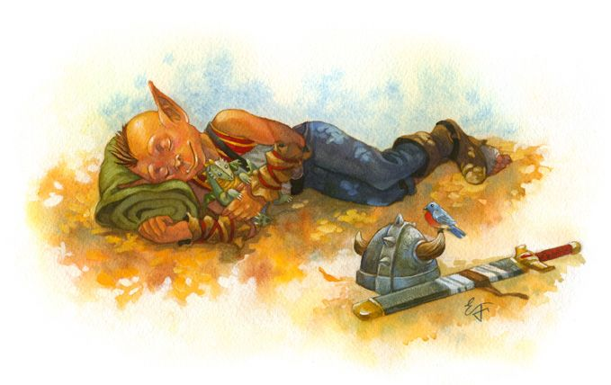

Let sleeping dogs die
The sounds of the horde fade into the background as you retrace your steps.
Running your hand along the wall of the cave you are suddenly met with open air.
A small opening only tall enough for a child to walkl through, you though it was just a shadow the first time you passed it.
Crawling through the tiny tunnel eventually brings you a small antechamber, past the cave mouth purple and blue shades of dying twilight paint the landscape.
The only obstical between you and freedom is a lone sleeping goblin softly snoring in the corner.
The goblin's equipment, including it's dagger is piled beside it's makeshift bed.
Do you:
Sneak past the goblin. No sense in taking chances now.
Grab the dagger. Best to kill the goblin before it has a chance to kill you.
Turn back. There has to be a dozen exits let's find one with out a guard